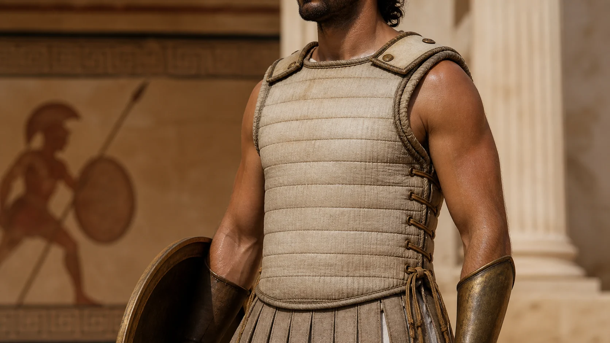
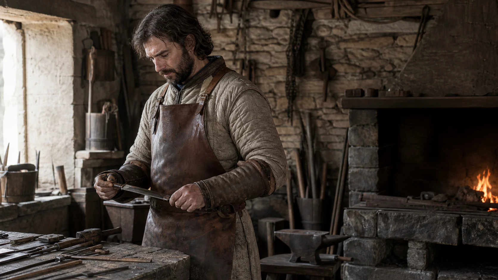
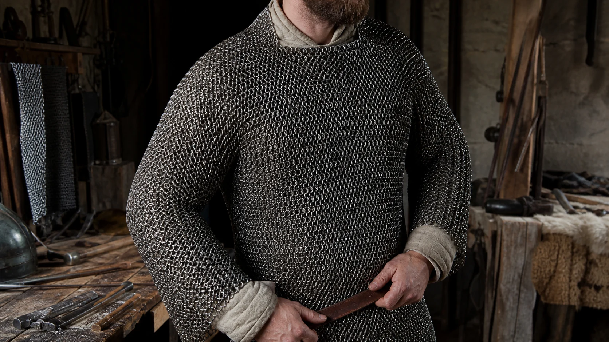
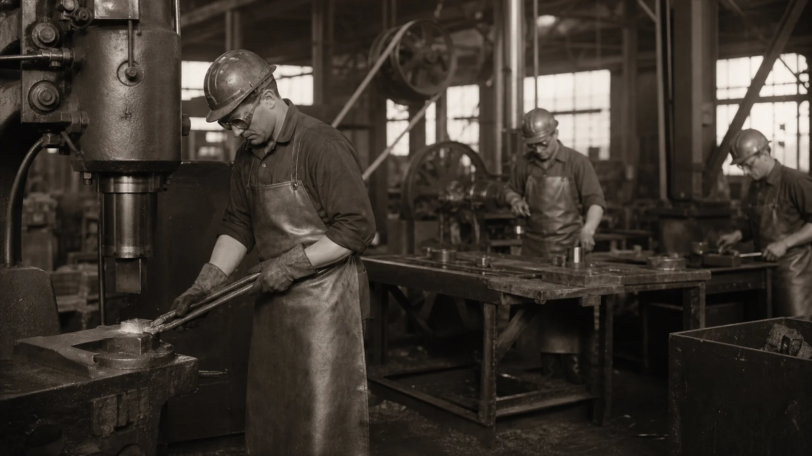
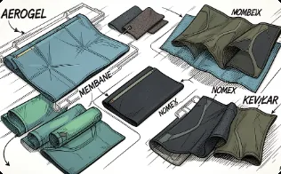
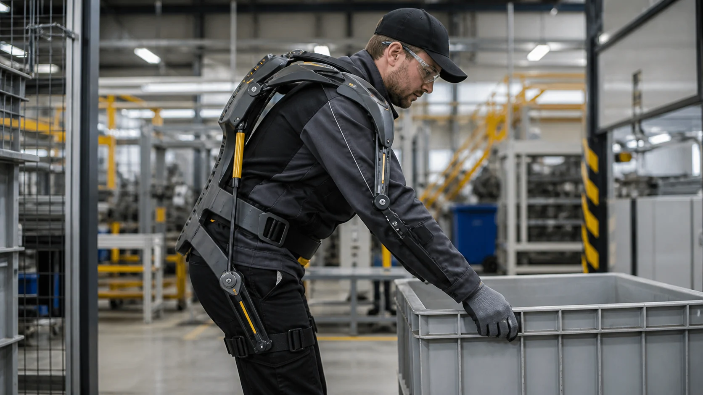

Шкуры животных
Первые прообразы защиты использовались от холода, сырости и внешних повреждений.
История СИЗ проходит путь от природных материалов и воинских доспехов до цифровых систем промышленной безопасности.
Первые прообразы защиты использовались от холода, сырости и внешних повреждений.
В материалах проекта описаны доспехи из плотных многослойных бумажных элементов, применявшиеся в Китае.
Греки, египтяне и римляне применяли панцири из нескольких слоёв льна или хлопка. Их масса составляла 2–6 кг.

Стёганые элементы набивали волокнистыми материалами, а обработанная кожа служила самостоятельной защитой.

Кольчужная защита сохраняла подвижность, но хуже противостояла колющим и тяжёлым ударам.

Стальные пластинчатые системы давали высокий уровень защиты, но отличались значительной массой.
Фабрики и химические производства потребовали защиты от пыли, химикатов, искр и шума. Развивались респираторы, очки и перчатки.

Арамидные волокна обеспечили высокую прочность при сравнительно малом весе и устойчивость к высоким температурам.

Датчики, связь и машинное зрение переводят защиту из пассивного режима в активный.

Экипировка интегрируется в цифровую экосистему предприятия, а экзоскелеты перераспределяют физическую нагрузку.
